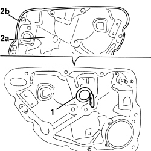

7205E39 STRIPPING REAR SIDE DOOR INTERIOR SUPPORT FRAME
- Path
- Procedures > 72 PANELS AND FRAMES > 7205 STRIPPING FOR REPLACEMENT INTERVENTIONS > 7205E EXTERIOR PARTS > 7205E39 STRIPPING REAR SIDE DOOR INTERIOR SUPPORT FRAME
- Kind
- repair procedure (removal / refitting; the operation number is the code)
- Applies to
- all engines; all production periods
- Interactive page
- https://sloeber94.github.io/elrnDB/alfa/159/en/#/939011437
Applies to: all engines; all production periods
 Removing
Removing
 Refitting
RefittingOp. 5505B21 REAR DOOR WIRING (ONE) LEFT OR RIGHT - R.R
Op. 5570T96 REAR SIDE SPEAKER (ONE), LEFT OR RIGHT- R.R
1. Prise the cover up from the mounting frame.
2. Recover frame (2a) with perimeter seal (2b).

Applies to: all engines; all production periods
Refitting
Removing- Check that the mounting frame and the gasket are not damaged.
- Prise the cover onto the mounting frame.
Topics linked from this page (4)
- 5505B21 REAR DOOR WIRING (ONE) LEFT OR RIGHT - R.R
- 5570T96 REAR SIDE SPEAKER (ONE), LEFT OR RIGHT- R.R
- 7010D34 REAR SIDE DOOR MANUAL WINDOW MECHANISM (ONE), LEFT OR RIGHT - R.R. WITH DOOR PANEL AND SUPPORT FRAME REMOVED
- 7010N20 REAR SIDE DOOR LOCK MOTOR/CATCH ASSEMBLY - R.R. WITH DOOR PANEL AND SUPPORT FRAME REMOVED